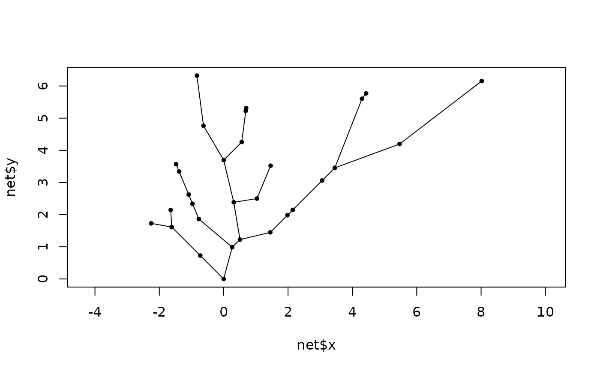

Grows a branching river network site by site, from the outlet upwards, for
landscape_river(). Each new site joins the network upstream of an existing one: with
probability branching it starts a new branch at a site that is not a headwater (a
confluence), and otherwise it extends a headwater, so that low values give long, little
branched channels and high values bushy networks. It is a simple random growth model, not an
optimal channel network (Rinaldo et al. 2014); networks from other sources, such as the
OCNet package or a real river, can be passed to landscape_river() as a data frame with
the downstream neighbour and the length of the reach of each site.
Usage
river_network(
n_sites,
branching = 0.3,
reach_length = 1,
fixed_length = FALSE,
max_branches = 2
)Arguments
- n_sites
Number of sites (at least 2).
- branching
Probability that a new site starts a branch rather than extending a headwater (between 0 and 1).
- reach_length
Mean length of the reach between a site and its downstream neighbour. Lengths are drawn from an exponential distribution with this mean, or are all equal with
fixed_length = TRUE.- fixed_length
Logical: equal reach lengths.
- max_branches
Largest number of branches that join at a confluence (2 for binary confluences).
Value
A data frame with one row per site, the outlet first: site, downstream (row of
the downstream neighbour, NA at the outlet), length (of the reach to the downstream
neighbour, 0 at the outlet), distance (along the channel to the outlet), magnitude
(Shreve magnitude, the number of headwaters upstream of the site, itself included),
upstream_length (the length of channel upstream of the site, its own reach included, a
proxy for the catchment area, which describes the size of a river better than Strahler
order; Altermatt 2013), order (Strahler order), headwater (logical) and the coordinates x and y.
Details
The coordinates place each site at its distance from the outlet along the channel, in a direction inside a wedge of angles that each confluence splits among its branches in proportion to their number of headwaters. Straight-line distances are therefore shorter than distances along the channel, and sites on neighbouring branches can be close in a straight line but far apart along the channel, as in real catchments.
References
Altermatt, F. (2013). Diversity in riverine metacommunities: a network perspective. Aquatic Ecology, 47, 365–377. doi:10.1007/s10452-013-9450-3
Rinaldo, A., Rigon, R., Banavar, J. R., Maritan, A., & Rodriguez-Iturbe, I. (2014). Evolution and selection of river networks: Statics, dynamics, and complexity. Proceedings of the National Academy of Sciences, 111, 2417–2424. doi:10.1073/pnas.1322700111
Examples
set.seed(1)
net <- river_network(30)
head(net)
#> site downstream length distance magnitude upstream_length order headwater
#> 1 site1 NA 0.0000000 0.000000 8 26.720545 3 FALSE
#> 2 site2 1 1.0227259 1.022726 6 23.459121 3 FALSE
#> 3 site3 2 0.3017409 1.324467 5 19.596765 3 FALSE
#> 4 site4 3 0.7252143 2.049681 2 11.172948 2 FALSE
#> 5 site5 4 0.7515427 2.801224 2 10.447734 2 FALSE
#> 6 site6 5 0.2350275 3.036251 2 9.696191 2 FALSE
#> x y
#> 1 0.0000000 0.0000000
#> 2 0.2647009 0.9878773
#> 3 0.5068515 1.2236478
#> 4 1.4493434 1.4493434
#> 5 1.9807643 1.9807643
#> 6 2.1469539 2.1469539
plot(net$x, net$y, asp = 1, pch = 19, cex = 0.6)
down <- !is.na(net$downstream)
segments(net$x[down], net$y[down], net$x[net$downstream[down]], net$y[net$downstream[down]])
